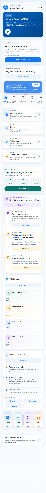

User Guide
Login, dashboard, absensi, jadwal, request, profil.
Buka panduanPanduan lengkap untuk user baru, penyiar, admin, reporter, operator, dan tim internal RadioSBL.

Login, dashboard, absensi, jadwal, request, profil.
Buka panduanJadwal, request lagu, naskah AI, dan tukar jadwal.
Buka panduanKelola user, rekap absensi, jadwal, dan aduan.
Buka panduanTugas liputan, deadline, dan dokumentasi lapangan.
Buka panduanStreaming, Live/OB, request, dan koordinasi studio.
Buka panduanStruktur aplikasi, alur kerja dokumentasi, dan keamanan.
Buka panduanProgram brief, rundown, template naskah, dan checklist verifikasi berita.
Buka briefStatus refinement super app: dashboard calm, player Pinrang, dan verifikasi akhir.
Buka statusGambar berikut menunjukkan tampilan terbaru aplikasi untuk mobile dan desktop.
